Practicum 6
Variatie en onzekerheid
Leerdoelen
Begrijpen van variatie tussen steekproeven d.m.v. datasimulatie;
Begrijpen van de steekproevenverdeling d.m.v. datasimulatie;
Berekenen en plotten van betrouwbaarheidsintervallen.
Voorbereiding
Lees hoofdstuk 12, hoofdstuk 13 t/m sectie 13.3 en hoofdstuk 19 t/m sectie 19.2.4 uit IMS. Voor het weergeven van betrouwbaarheidsintervallen in grafieken lees sectie 16.2 t/m Figuur 16.11 uit Wilke (2019).
De benodigde R-functies zijn te vinden in het dictaat (zie ook eerdere hoofdstukken en practica). Functies die niet in het dictaat besproken worden, worden gegeven in de opdracht.
Introductie
In het eerste deel van dit practicum (sectie 1) gaan we werken met datasimulatie om een beter begrip te krijgen van variatie tussen steekproeven, de theoretische notie steekproevenverdeling en de factoren die hierbij een rol spelen. Bij datasimulatie genereren we de data zelf, met behulp van functies in R. In dit eerste deel zal de R-code worden gegeven en is het aan jou om de uitkomsten de interpreteren. In het tweede deel van het practicum ga je deze kennis vervolgens toepassen op de data uit de Ethnologue waar we in Practicum 4 ook al mee gewerkt hebben. In het laatste deel van het practicum ga je betrouwbaarheidsintervallen berekenen en plotten met behulp van ggplot2.
Werkwijze
Kopieer om te beginnen het bestand voornaam_achternaam_PracticumX.qmd uit de map templates_scripts_quarto in je Rproject naar de hoofdmap. Hernoem het bestand door je eigen naam in te vullen en het juiste nummer van het practicum. Open het bestand vervolgens vanuit RStudio. Maak voor afzonderlijke taken steeds een nieuw codeblokje aan en test de werking door je qmd-bestand tussendoor te renderen.
Wil je je qmd-bestand renderen naar html, zorg dan dat je zeker weet dat al je R-code werkt, anders krijg je zeker errors. Werkt een stukje code nog niet, zet dan een # voor de betreffende regels, of zet #| eval: false als eerste regel in je code-block (niet vergeten om weg te halen als de code wel weer werkt).
Meer informatie over Quarto kun je vinden in hoofdstuk 28 van Wickham et al. (2023) en op de Quarto website. Zie ook deel 2 van Practicum 3.
Om de code in dit practicum na te kunnen doen moet je de packages tidyverse en infer laden. Dat laatste package moet je waarschijnlijk eerst nog installeren.
Deel 1 | Datasimulatie: variatie tussen steekproeven
Een dataset genereren in R
Datasimulatie is een krachtige techniek die gebruikt kan worden om theoretische begrippen of de werking van statistische modellen beter te begrijpen.1 N.B. het spreekt voor zich dat we datasimulatie niet mogen gebruiken om daadwerkelijke onderzoeksdata te genereren! Bij datasimulatie vragen we de computer om random data te genereren op basis van een distributie met bepaalde eigenschappen, bijv. een normaalverdeling met een bepaald gemiddelde en standaarddeviatie. R heeft hiervoor verschillende ingebouwde functies waarvan de naam begint met r (voor random) gevolgd door een aanduiding van de distributie waaruit gesampled wordt. Zo geeft rnorm() een random sample uit een normaalverdeling en rt() uit een t-verdeling. Wij richten ons hier op de normaalverdeling met rnorm().
1 De code in deze opdracht is deels geïnspireerd door dit voorbeeld van Adshade et al. (2023).
De functie rnorm() neemt drie argumenten in de volgende volgorde rnorm(n, mean, sd): (i) n: aantal random datapunten dat gegenereerd moet worden, (ii) mean: het gemiddelde van de verdeling waaruit gesampled wordt, (iii) sd: de standaarddeviatie van de verdeling waaruit gesampled wordt. Dus rnorm(n = 23, mean = 34, sd = 6.5) (korte versie: rnorm(23, 34, 6.5)) genereert 23 random datapunten uit een normaalverdeling met een gemiddelde van 34 en standaarddeviatie van 6,5. Wanneer je gemiddelde en standaarddeviatie niet specificeert wordt uitgegaan van een standaardnormaalverdeling met gemiddelde 0 en standaarddeviatie 1.
- We genereren 10 datapunten uit een normaalverdeling naar keuze.
rnorm(10, mean = 45, sd = 16) [1] 57.82628 40.12197 44.71373 45.76987 57.03115 32.62796 48.92320 11.28180
[9] 64.64169 35.52393- We genereren nu nog twee keer 10 datapunten uit dezelfde normaalverdeling als die we in 1 hebben gekozen.
rnorm(10, mean = 45, sd = 16); rnorm(10, mean = 45, sd = 16) [1] 57.02728 61.17262 41.10411 54.15253 16.52987 60.48631 31.10549 54.11673
[9] 41.39210 68.70293 [1] 32.83999 26.17214 36.54164 18.63344 54.50505 30.74581 65.97317 55.36531
[9] 40.46888 56.74697Wat valt je op als je deze getallen vergelijkt met die bij 1 zijn gegenereerd?
In alle drie de gevallen worden er 10 datapunten gegenereerd, maar het zijn wel steeds 10 andere datapunten. De samples zijn dus niet identiek.
Functies als rnorm() genereren random getallen. Dat is precies wat we willen, maar voor de reproduceerbaarheid van de analyse is het lastig als dit steeds verschillende getallen zijn. Gelukkig kunnen we dit voorkomen door een zogenaamde random seed in te stellen, zoals we eerder hebben gezien in Hoofdstuk 4. Dit doen we in R met de functie set.seed() waarbij je tussen haakjes een getal naar keuze invult. Wanneer je deze random seed bij elke nieuwe sessie op dezelfde manier definieert, zul je steeds dezelfde random (!) getallen krijgen, ook wanneer je steeds een nieuwe versie van je Quarto-document rendert. Ook andere gebruikers die jouw code gebruiken zullen met die random seed dezelfde uitkomsten krijgen. Dit maakt je analyse dus volledig reproduceerbaar. N.B. je definieert je random seed (in principe) maar een keer per script.
- We stellen een random seed in met de waarde
1234en genereren drie keer 10 datapunten uit onze gekozen normaalverdeling.
set.seed(1234)
rnorm(10, mean = 45, sd = 16); rnorm(10, mean = 45, sd = 16); rnorm(10, mean = 45, sd = 16) [1] 25.686948 49.438868 62.351059 7.468837 51.865995 53.096894 35.804161
[8] 36.253890 35.968768 30.759395 [1] 37.36492 29.02582 32.57994 46.03134 60.35190 43.23543 36.82385 30.42087
[9] 31.60525 83.65336 [1] 47.14541 37.14903 37.95123 52.35343 33.90048 21.82872 54.19609 28.62151
[9] 44.75779 30.02482Dit hele proces herhalen we vervolgens nog een keer.
set.seed(1234)
rnorm(10, mean = 45, sd = 16); rnorm(10, mean = 45, sd = 16); rnorm(10, mean = 45, sd = 16) [1] 25.686948 49.438868 62.351059 7.468837 51.865995 53.096894 35.804161
[8] 36.253890 35.968768 30.759395 [1] 37.36492 29.02582 32.57994 46.03134 60.35190 43.23543 36.82385 30.42087
[9] 31.60525 83.65336 [1] 47.14541 37.14903 37.95123 52.35343 33.90048 21.82872 54.19609 28.62151
[9] 44.75779 30.02482Wat valt je op als je de sets gegenereerde getallen met elkaar vergelijkt?
Na het vaststellen van de random seed worden er drie keer 10 datapunten gegenereerd, maar het zijn wel steeds 10 andere datapunten. Na het opnieuw vaststellen van de random seed worden dezelfde drie samples gegenereerd als de eerste keer. De random seed maakt het simulatieproces dus reproduceerbaar.
Een populatie genereren
We gaan nu met behulp van rnorm() een populatie genereren waar we vervolgens steekproeven uit kunnen trekken. Voor de overzichtelijkheid is het vaak handig om de parameters die je in de simulatie stopt (de argumenten van rnorm()) eerst apart te definiëren en vervolgens terug te verwijzen naar deze waarden bij het aanroepen van rnorm(). Dit is hieronder weergegeven (waarbij je voor … de relevante getallen moet invullen).
#1. vaststellen parameters
#N.B. op de ... moet je je eigen getallen invullen
set.seed(...) # random seed definiëren (kies een getal), dit is de enige plek waarop je dit nog doet in je document, hierna niet meer
n <- ... # steekproefgrootte: aantal datapunten dat je wilt samplen
gem <- ... # gemiddelde van de verdeling waaruit je gaat samplen
stdev <- ... # standaarddeviatie van de verdeling waaruit je gaat samplen
#2. genereren van populatie
populatie <- rnorm(n, gem, stdev)
#3. data omzetten naar tibble
populatie <- tibble(populatie)- We genereren nu op bovenstaande manier een populatie van 10000 datapunten met een gemiddelde van 70 en een standaarddeviatie van 8,3. Je kunt je dit voorstellen als de scores op een taaltoets die door een populatie zijn behaald.
#1. vaststellen parameters
set.seed(1234) # random seed definiëren, dit is de enige plek waarop we dit nog doen in dit document, hierna niet meer
n <- 10000 # steekproefgrootte: aantal datapunten dat je wilt samplen
gem <- 70 # gemiddelde van de verdeling waaruit je gaat samplen
stdev <- 8.3 # standaarddeviatie van de verdeling waaruit je gaat samplen
#2. genereren van populatie
populatie <- rnorm(n, gem, stdev)
#3. data omzetten naar tibble
populatie <- tibble(waarde = populatie)- We bekijken de gegenereerde dataset en berekenen vervolgens het gemiddelde en de standaarddeviatie van de populatie.
#head(populatie)
populatie %>% print(n = 6)# A tibble: 10,000 × 1
waarde
<dbl>
1 60.0
2 72.3
3 79.0
4 50.5
5 73.6
6 74.2
# ℹ 9,994 more rowspopulatie %>%
summarise(gemiddelde = mean(waarde),
st_dev = sd(waarde))# A tibble: 1 × 2
gemiddelde st_dev
<dbl> <dbl>
1 70.1 8.20Wat valt je op aan de waarde van het gemiddelde en de standaarddeviatie van de populatie?
Het valt op dat het gemiddelde (70,1) en de standaardeviatie (8,2) van de populatie heel dicht liggen bij (maar niet identiek zijn aan) de opgegeven waarden van 70 en 8,3. De kleine afwijkingen komen doordat we te maken hebben met een randomproces.
- We maken nu een grafiek van de verdeling van de populatie. We voegen hierbij een verticale lijn toe die het populatiegemiddelde weergeeft met de functie
geom_vline(). Deze functie neemt als argumentxintercept =die de plek op de x-as aangeeft waar de lijn moet komen. De kleur van de lijn kun je aanpassen metcolor =, het lijntype metlinetype =(bijv.'dashed'voor een stippellijn) en de dikte als getal metlwd =. De grafiek is te zien in Figuur 1.1 (de vorm van de grafiek zal verschillen afhankelijk van de gekozenrandom seed).
populatie %>%
ggplot(aes(x = waarde)) +
geom_histogram(bins = 50, color = "white") +
geom_vline(xintercept = mean(populatie$waarde),
color = "steelblue2",
linetype = "dashed",
lwd = 1) +
labs(y = NULL) +
theme_minimal(16)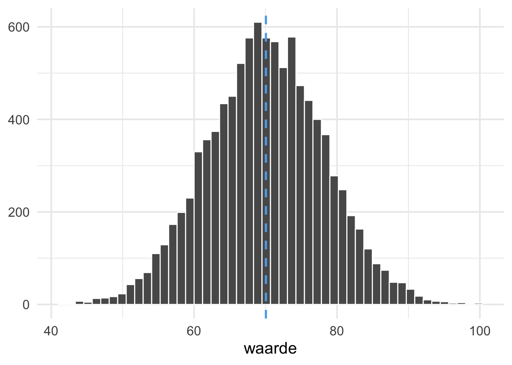
Wat valt je op aan de verdeling in Figuur 1.1?
De verdeling lijkt heel erg op een normaalverdeling, maar is niet perfect.
Steekproeven uit de populatie trekken
Nu we een gesimuleerde populatie hebben, kunnen we hier steekproeven uit gaan trekken. In Hoofdstuk 4 en Practicum 2 heb je al kennisgemaakt met R-functies die hierbij gebruikt kunnen worden.
- We trekken eerst een simple random sample van 10 datapunten uit de populatie. We berekenen het gemiddelde en de standaarddeviatie van de steekproef en maken een grafiek van de verdeling, waarbij we het gemiddelde weergeven met een rode verticale lijn (Figuur 1.2).
sample_10 <- populatie %>%
slice_sample(n = 10)
sample_10 %>%
summarise(gemiddelde = mean(waarde),
st_dev = sd(waarde))# A tibble: 1 × 2
gemiddelde st_dev
<dbl> <dbl>
1 71.8 12.0sample_10 %>%
ggplot(aes(x = waarde)) +
geom_histogram(bins = 10, color = "white") +
geom_vline(xintercept = mean(sample_10$waarde), color = "red", lwd = 1) +
labs(y = NULL,
title = "Steekproefgrootte = 10") +
theme_minimal(16)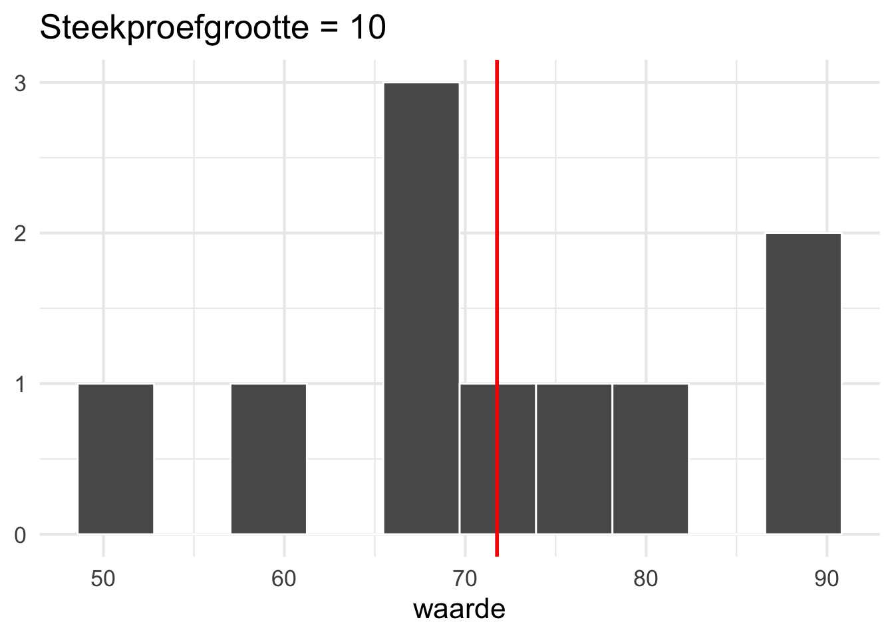
Wat valt je op aan de verdeling in Figuur 1.2 in vergelijking met de populatie?
Het gemiddelde komt redelijk in de buurt van de populatie, maar de standaarddeviatie is flink hoger. De verdeling lijkt helemaal niet op die van de populatie.
- We trekken nu nog een keer een simple random sample van 10 datapunten uit de populatie (Figuur 1.3).
sample_10_2 <- populatie %>%
slice_sample(n = 10)
sample_10_2 %>%
summarise(gemiddelde = mean(waarde),
st_dev = sd(waarde))# A tibble: 1 × 2
gemiddelde st_dev
<dbl> <dbl>
1 68.5 5.36sample_10_2 %>%
ggplot(aes(x = waarde)) +
geom_histogram(bins = 10, color = "white") +
geom_vline(xintercept = mean(sample_10_2$waarde), color = "red", lwd = 1) +
labs(y = NULL,
title = "Steekproefgrootte = 10") +
theme_minimal(16)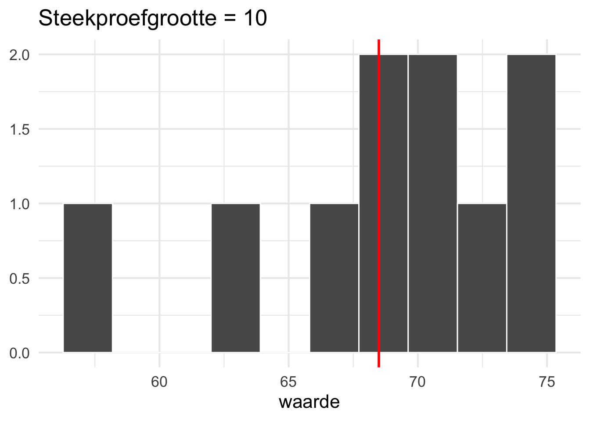
Wat valt je op aan de verdeling in Figuur 1.3 in vergelijking met de populatie?
Het gemiddelde en de standaarddeviatie liggen deze keer onder die van de populatie; de verdeling in deze steekproef is anders maar lijkt er weer helemaal niet op.
- We trekken nu een simple random sample van 50 datapunten uit de populatie. We berekenen weer het gemiddelde en de standaarddeviatie van de steekproef en maken een grafiek van de verdeling (Figuur 1.4).
sample_50 <- populatie %>%
slice_sample(n = 50)
sample_50 %>%
summarise(gemiddelde = mean(waarde),
st_dev = sd(waarde))# A tibble: 1 × 2
gemiddelde st_dev
<dbl> <dbl>
1 69.0 7.31sample_50 %>%
ggplot(aes(x = waarde)) +
geom_histogram(bins = 10, color = "white") +
geom_vline(xintercept = mean(sample_50$waarde), color = "red", lwd = 1) +
labs(y = NULL,
title = "Steekproefgrootte = 50") +
theme_minimal(16)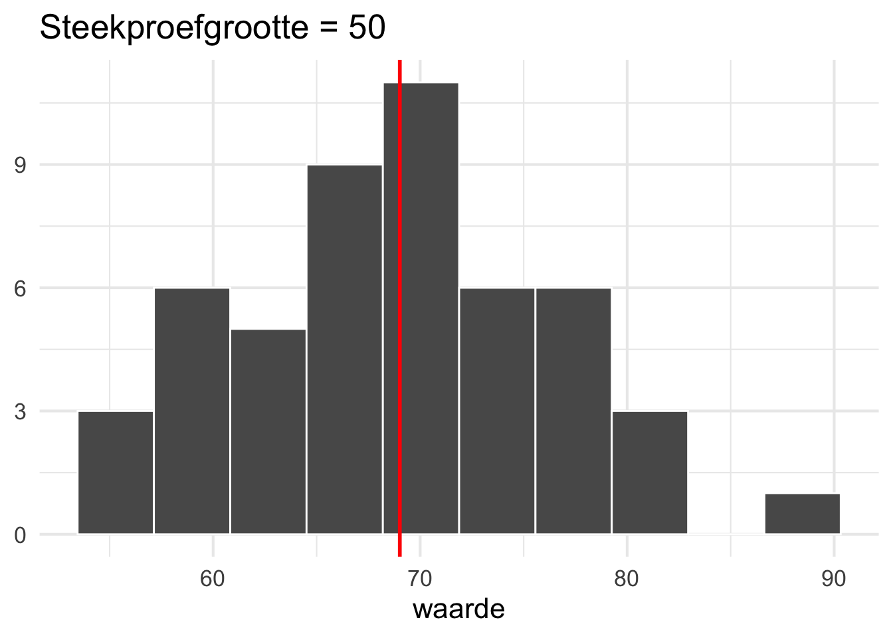
Wat valt je op aan de verdeling in Figuur 1.4 in vergelijking met de populatie?
Het gemiddelde en de standaarddeviatie liggen onder die van de populatie, maar komen redelijk in de buurt; de verdeling lijkt er aan de linkerhelft wel op, maar het rechterdeel veel minder.
- Ook deze steekproeftrekking herhalen we nog een keer (Figuur 1.5).
sample_50_2 <- populatie %>%
slice_sample(n = 50)
sample_50_2 %>%
summarise(gemiddelde = mean(waarde),
st_dev = sd(waarde))# A tibble: 1 × 2
gemiddelde st_dev
<dbl> <dbl>
1 70.7 8.82sample_50_2 %>%
ggplot(aes(x = waarde)) +
geom_histogram(bins = 10, color = "white") +
geom_vline(xintercept = mean(sample_50_2$waarde), color = "red", lwd = 1) +
labs(y = NULL,
title = "Steekproefgrootte = 50") +
theme_minimal(16)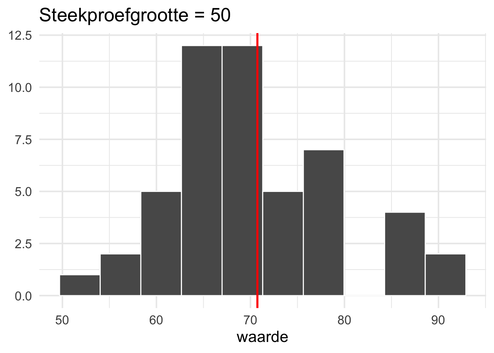
Wat valt je op aan de verdeling van deze tweede steekproef van 50 (Figuur 1.5) in vergelijking met de populatie?
Het gemiddelde en de standaarddeviatie liggen deze keer iets boven die van de populatie; de verdeling in deze steekproef is vergelijkbaar met de vorige, hoewel er duidelijke verschillen zijn. Ook hier lijkt de verdeling aan de linkerkant van het gemiddelde meer op die van de populatie.
- Tot slot, trekken we ook nog een simple random sample van 500 datapunten uit de populatie, berekenen het gemiddelde en de standaarddeviatie van de steekproef en maken een grafiek van de verdeling (Figuur 1.6).
sample_500 <- populatie %>%
slice_sample(n = 500)
sample_500 %>%
summarise(gemiddelde = mean(waarde),
st_dev = sd(waarde))# A tibble: 1 × 2
gemiddelde st_dev
<dbl> <dbl>
1 70.1 7.98sample_500 %>%
ggplot(aes(x = waarde)) +
geom_histogram(bins = 10, color = "white") +
geom_vline(xintercept = mean(sample_500$waarde), color = "red", lwd = 1) +
labs(y = NULL,
title = "Steekproefgrootte = 500") +
theme_minimal(16)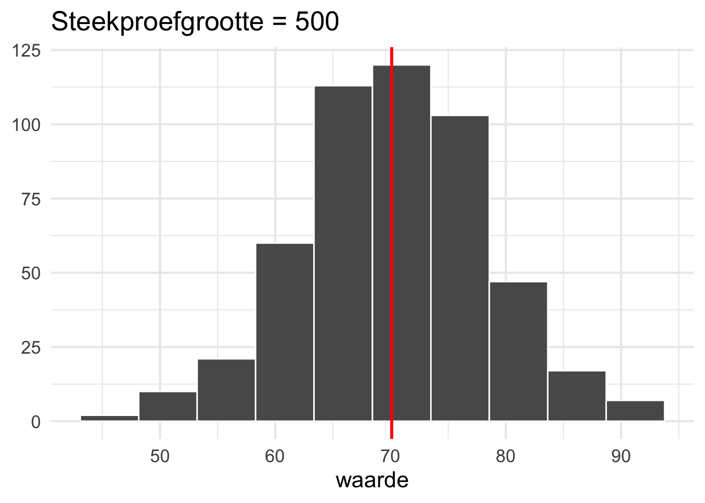
Wat valt je op aan de verdeling van deze steekproef van 500 (Figuur 1.6) in vergelijking met de populatie?
Het gemiddelde is identiek en de standaarddeviatie komt dicht in de buurt van de populatie; de verdeling lijkt er ook best goed op.
- Ook deze steekproeftrekking herhalen we nog een keer (Figuur 1.7).
sample_500_2 <- populatie %>%
slice_sample(n = 500)
sample_500_2 %>%
summarise(gemiddelde = mean(waarde),
st_dev = sd(waarde))# A tibble: 1 × 2
gemiddelde st_dev
<dbl> <dbl>
1 70.1 8.38sample_500_2 %>%
ggplot(aes(x = waarde)) +
geom_histogram(bins = 10, color = "white") +
geom_vline(xintercept = mean(sample_500_2$waarde), color = "red", lwd = 1) +
labs(y = NULL,
title = "Steekproefgrootte = 500") +
theme_minimal(16)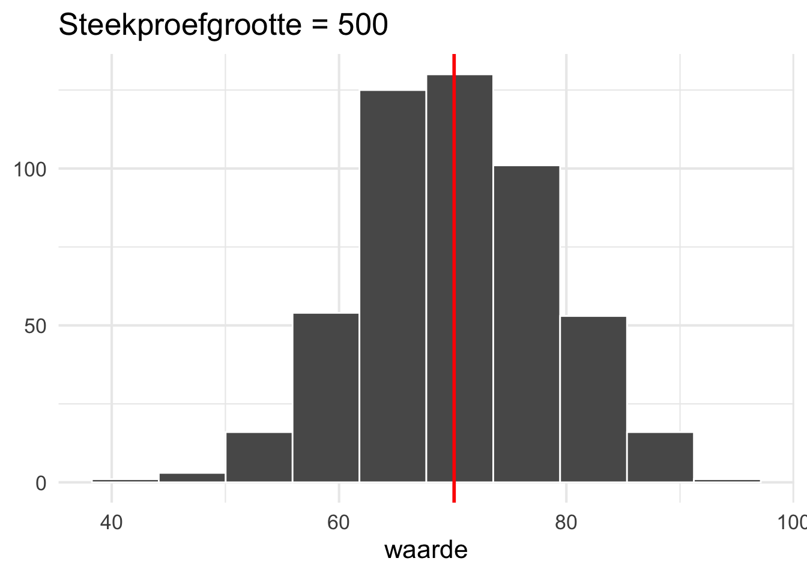
Wat valt je op aan de verdeling van deze tweede steekproef van 500 (Figuur 1.7) in vergelijking met de populatie?
Het gemiddelde is weer identiek aan de dat van de populatie en de standaarddeviatie komt weer erg dicht in de buurt. Deze steekproef lijkt behoorlijk op de vorige steekproef; Ook de verdelingen lijken op elkaar en op die van de populatie.
Welke conclusie kun je trekken op basis van bovenstaande vragen?
In kleinere steekproeven is er meer variatie dan in grotere steekproeven. De kans dat je steekproef lijkt op de populatie is dan ook kleiner.
Een steekproevenverdeling maken
In de vorige opdracht heb je handmatig twee keer een steekproef van een bepaalde omvang getrokken uit de gesimuleerde populatie. Met twee steekproeven is dat nog wel te doen, maar dit wordt wel erg veel werk wanneer we dit veel vaker willen doen. Gelukkig is er een functie rep_sample_n() beschikbaar uit het package infer die dit een stuk gemakkelijker maakt voor ons. Deze functie neemt twee argumenten rep_sample_n(size = , reps = ): (i) size geeft de grootte van de steekproef aan (wat we hierboven hebben gedefinieerd als n), (ii) reps geeft aan hoeveel steekproeven je wilt trekken uit de populatie. Ook hier loont het voor het overzicht weer om deze parameters buiten de functie te definiëren.
#1. vaststellen parameters
#N.B. op de ... moet je je eigen getallen invullen
n <- ... # steekproefgrootte: aantal datapunten dat je wilt samplen
rep <- ... # aantal steekproeven dat je in totaal wilt trekken
#2. genereren van steekproeven
steekproeven_n_rep <- populatie %>% # vul voor n en rep de bijbehorende getallen in om de naam uniek te houden
rep_sample_n(size = n, reps = rep)- We genereren met behulp van deze functie een steekproevenverdeling van 1000 steekproeven uit onze gesimuleerde populatie ieder met een steekproefgrootte van 10.
#1. vaststellen parameters
n <- 10 # steekproefgrootte: aantal datapunten dat je wilt samplen
rep <- 1000 # aantal steekproeven dat je in totaal wilt trekken
#2. genereren van steekproeven
steekproeven_10_1000 <- populatie %>%
rep_sample_n(size = n, reps = rep)De output van deze functie levert een tibble op waarbij de waardes van de steekproeven onder elkaar worden getoond. De kolom replicate geeft aan om welke steekproef het gaat.
steekproeven_10_1000 %>% print(n = 15)# A tibble: 10,000 × 2
# Groups: replicate [1,000]
replicate waarde
<int> <dbl>
1 1 70.4
2 1 65.2
3 1 70.6
4 1 67.7
5 1 84.8
6 1 72.0
7 1 60.7
8 1 86.0
9 1 68.3
10 1 79.8
11 2 73.2
12 2 54.8
13 2 68.4
14 2 55.4
15 2 69.5
# ℹ 9,985 more rowsDe kolom replicate stelt ons in staat om per steekproef een gemiddelde te berekenen.
steekproevenverdeling_10_1000 <- steekproeven_10_1000 %>%
group_by(replicate) %>% # deze stap kun je weglaten aangezien de output van rep_sample_n() al gegroepeerd is per replicate
summarise(gemiddelde_steekproef = mean(waarde))
steekproevenverdeling_10_1000 %>% print(n = 10)# A tibble: 1,000 × 2
replicate gemiddelde_steekproef
<int> <dbl>
1 1 72.6
2 2 70.2
3 3 65.8
4 4 69.2
5 5 67.9
6 6 71.9
7 7 69.4
8 8 69.9
9 9 64.8
10 10 71.2
# ℹ 990 more rows- Deze gemiddelden samen vormen de steekproevenverdeling van het gemiddelde. We kunnen ook van deze verdeling het gemiddelde en de standaarddeviatie berekenen. De standaarddeviatie van de steekproevenverdeling noemen we de standard error.
steekproevenverdeling_10_1000 %>%
summarise(gemiddelde_verdeling = mean(gemiddelde_steekproef),
st_error = sd(gemiddelde_steekproef))# A tibble: 1 × 2
gemiddelde_verdeling st_error
<dbl> <dbl>
1 70.1 2.58- We maken vervolgens een grafiek van de verdeling de steekproevenverdeling en voegen hier een verticale rode lijn aan toe met het gemiddelde van de steekproevenverdeling en een gestippelde blauwe verticale lijn met het gemiddelde van de populatie (Figuur 1.8).
# grafiek maken van de steekproevenverdeling
steekproevenverdeling_10_1000 %>%
ggplot(aes(x = gemiddelde_steekproef)) +
geom_histogram(bins = 50, color = "white") +
geom_vline(xintercept = mean(steekproevenverdeling_10_1000$gemiddelde_steekproef), color = "red", lwd = 1) +
geom_vline(xintercept = mean(populatie$waarde), color = "steelblue2", linetype = "dashed", lwd = 1) +
labs(y = NULL,
x = "gemiddelde van de steekproef",
title = "Steekproevenverdeling",
subtitle = "steekproefgrootte = 10, aantal replicaties = 1000"
) +
theme_minimal(16)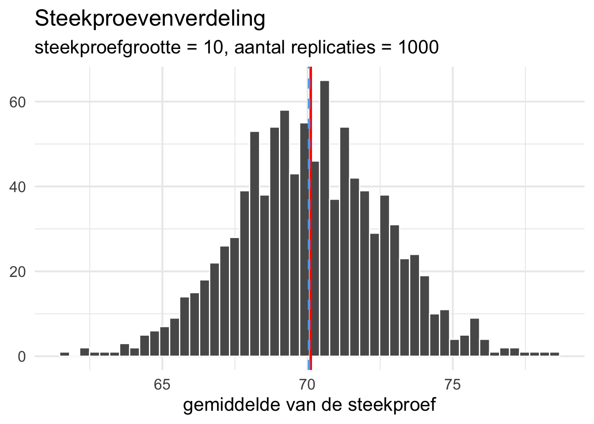
Wat valt je op aan de verdeling van de steekproevenverdeling in Figuur 1.8?
De verdeling lijkt behoorlijk op een normaalverdeling. Het gemiddelde van de steekproevenverdeling is praktisch identiek aan die van de populatie.
- We maken nu ook een figuur van de steekproevenverdeling op basis van 1000 steekproeven met een steekproefgrootte van 50 (Figuur 1.9) en voor voor 1000 steekproeven met een steekproefgrootte van 500 (Figuur 1.10).
# Voor steekproefgrootte 50
#1. vaststellen parameters
n <- 50 # steekproefgrootte: aantal datapunten dat je wilt samplen
rep <- 1000 # aantal steekproeven dat je in totaal wilt trekken
#2. genereren van steekproeven
steekproeven_50_1000 <- populatie %>%
rep_sample_n(size = n, reps = rep)
#3. gemiddelden van elke steekproef berekenen om zo de steekproevenverdeling te verkrijgen
steekproevenverdeling_50_1000 <- steekproeven_50_1000 %>%
# group_by(replicate) %>% # deze stap kun je weglaten aangezien de output van rep_sample_n() al gegroepeerd is per replicate
summarise(gemiddelde_steekproef = mean(waarde))
#4. gemiddelde en standaarddeviatie (st. error) van de steekproevenverdeling berekenen
steekproevenverdeling_50_1000 %>%
summarise(gemiddelde_verdeling = mean(gemiddelde_steekproef),
st_error = sd(gemiddelde_steekproef))# A tibble: 1 × 2
gemiddelde_verdeling st_error
<dbl> <dbl>
1 70.0 1.15#5. grafiek maken van de steekproevenverdeling
steekproevenverdeling_50_1000 %>%
ggplot(aes(x = gemiddelde_steekproef)) +
geom_histogram(bins = 50, color = "white") +
geom_vline(xintercept = mean(steekproevenverdeling_50_1000$gemiddelde_steekproef), color = "red", lwd = 1) +
geom_vline(xintercept = mean(populatie$waarde), color = "steelblue2", linetype = "dashed", lwd = 1) +
labs(y = NULL,
x = "gemiddelde van de steekproef",
title = "Steekproevenverdeling",
subtitle = "steekproefgrootte = 50, aantal replicaties = 1000"
) +
theme_minimal(16)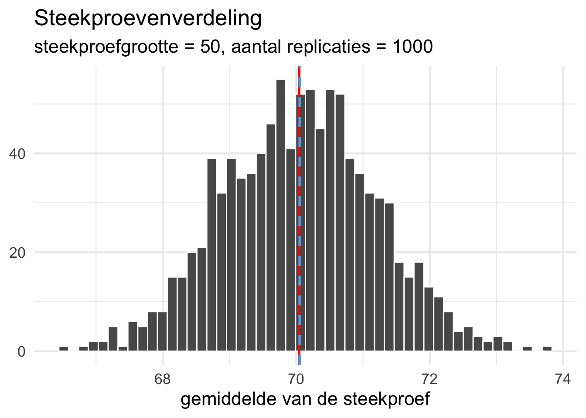
# Voor steekproefgrootte 500
#1. vaststellen parameters
n <- 500 # steekproefgrootte: aantal datapunten dat je wilt samplen
rep <- 1000 # aantal steekproeven dat je in totaal wilt trekken
#2. genereren van steekproeven
steekproeven_500_1000 <- populatie %>%
rep_sample_n(size = n, reps = rep)
#3. gemiddelden van elke steekproef berekenen om zo de steekproevenverdeling te verkrijgen
steekproevenverdeling_500_1000 <- steekproeven_500_1000 %>%
# group_by(replicate) %>% # deze stap kun je weglaten aangezien de output van rep_sample_n() al gegroepeerd is per replicate
summarise(gemiddelde_steekproef = mean(waarde))
#4. gemiddelde en standaarddeviatie (st. error) van de steekproevenverdeling berekenen
steekproevenverdeling_500_1000 %>%
summarise(gemiddelde_verdeling = mean(gemiddelde_steekproef),
st_error = sd(gemiddelde_steekproef))# A tibble: 1 × 2
gemiddelde_verdeling st_error
<dbl> <dbl>
1 70.1 0.367#5. grafiek maken van de steekproevenverdeling
steekproevenverdeling_500_1000 %>%
ggplot(aes(x = gemiddelde_steekproef)) +
geom_histogram(bins = 50, color = "white") +
geom_vline(xintercept = mean(steekproevenverdeling_500_1000$gemiddelde_steekproef), color = "red", lwd = 1) +
geom_vline(xintercept = mean(populatie$waarde), color = "steelblue2", linetype = "dashed", lwd = 1) +
labs(y = NULL,
x = "gemiddelde van de steekproef",
title = "Steekproevenverdeling",
subtitle = "steekproefgrootte = 500, aantal replicaties = 1000"
) +
theme_minimal(16)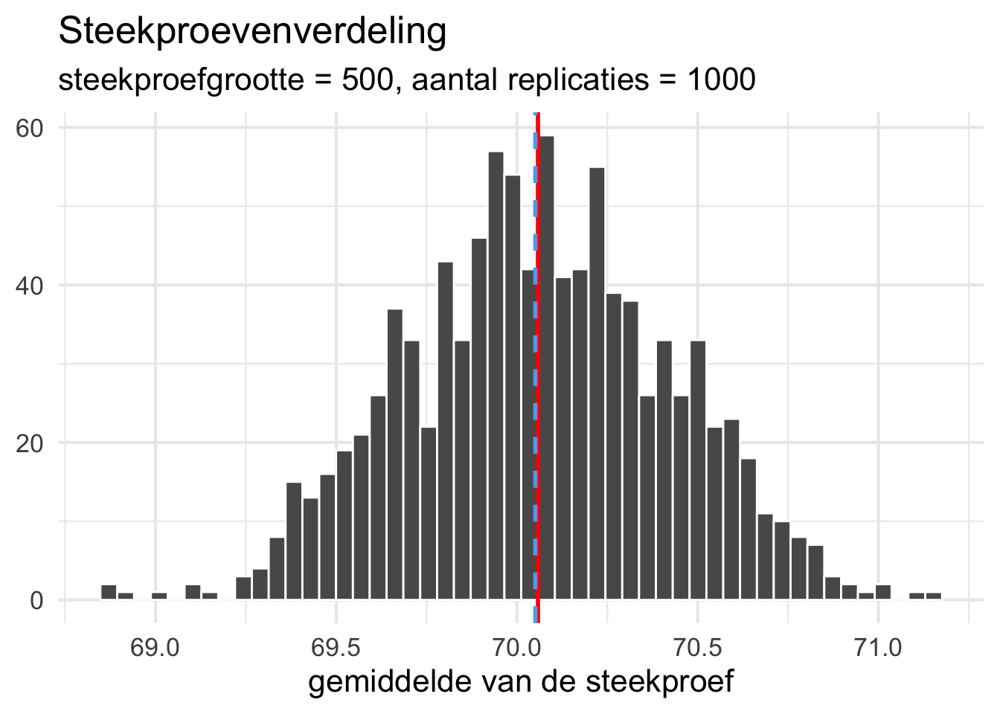
Wat valt je op als je de drie steekproevenverdelingen die we hebben gemaakt met elkaar vergelijkt (Figuur 1.8 - Figuur 1.10)?
In alledrie de steekproevenverdelingen ligt het gemiddelde van de steekproevenverdeling heel dicht op het gemiddelde van de populatie. We zien wel dat de variatie in de steekproevenverdeling steeds kleiner wordt (d.w.z. de standard error neemt af) als de steekproefgrootte toeneemt. Dit zagen we ook al toen we eerder losse steekproeven trokken: hoe groter de steekproef, des te dichter ligt het gemiddelde bij dat van de populatie. Meerdere grote steekproeven zullen dus vaker een gemiddelde geven dat dicht bij het populuatiegemiddelde ligt. Dit in tegenstelling tot de kleinere steekproeven waarbij het gemiddelde meer zal variëren.
Bootstrapping
In de vorige opdracht hebben we steekproevenverdelingen gemaakt op basis van herhaalde steekproeven uit de populatie. In de praktijk hebben we (doorgaans) niet de mogelijkheid om dit te doen en zouden we bovendien liever één groter sample nemen dan meerdere kleine (zie hoofdstuk 12 en sectie 19.1 uit IMS). Bootstrapping biedt een manier om op basis van één enkel sample toch een steekproevenverdeling te genereren. Dit gebeurt door meerdere malen een steekproef van dezelfde grootte te trekken uit de beschikbare steekproef. Dit doen we met teruglegging (replacement). Dit betekent dat eenzelfde datapunt uit het sample meerdere keren kan worden geselecteerd in een bootstrap-sample. Op deze manier kunnen we verschillende steekproeven genereren op basis van hetzelfde sample. Ook hier kunnen we in R de functie rep_sample_n() uit het infer package gebruiken. We moeten dan alleen de optie replace = TRUE toevoegen.
# genereren van bootstrap-steekproeven
bootstrap_n_rep <- populatie %>% # vul voor n en rep de bijbehorende getallen in om de naam uniek te houden
rep_sample_n(size = n, reps = rep, replace = TRUE)- We genereren eerst een nieuwe steekproef van 50 observaties uit onze gesimuleerde populatie.
sample_bs_50 <- populatie %>%
slice_sample(n = 50)
sample_bs_50 %>%
summarise(gemiddelde = mean(waarde),
st_dev = sd(waarde))# A tibble: 1 × 2
gemiddelde st_dev
<dbl> <dbl>
1 70.0 7.68sample_bs_50 %>%
ggplot(aes(x = waarde)) +
geom_histogram(bins = 10, color = "white") +
geom_vline(xintercept = mean(sample_bs_50$waarde), color = "red", lwd = 1) +
labs(y = NULL,
title = "Steekproefgrootte = 50") +
theme_minimal(16)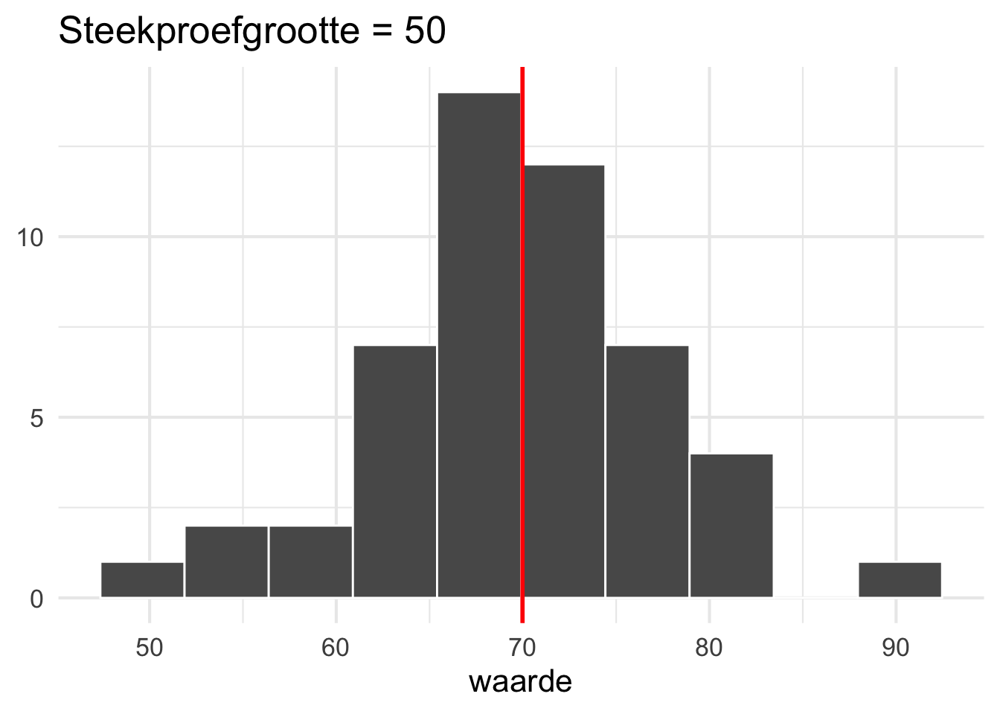
Wat valt je op aan de verdeling van deze steekproef (Figuur 1.11)?
Het gemiddelde en de standaarddeviatie liggen net als bij de eerdere opdrachten met steekproefgrootte van 50 behoorlijk in de buurt of zelfs op die van de populatie. De verdeling is redelijk gelijk verdeeld rondom het gemiddelde, maar niet helemaal normaal.
- Vervolgens genereren we 1000 bootstrap-samples uit deze steekproef van 50. We berekenen voor iedere bootstrap-sample het gemiddelde. Dit is de steekproevenverdeling. We berekenen vervolgens het gemiddelde en de standaarddeviatie (standard error) van de steekproevenverdeling en maken weer een grafiek van de steekproevenverdeling (Figuur 1.12).
# Voor bootstrapsamples met steekproefgrootte 50
#1. vaststellen parameters
n <- 50 # steekproefgrootte: aantal datapunten dat je wilt samplen
rep <- 1000 # aantal steekproeven dat je in totaal wilt trekken
#2. genereren van steekproeven
bootstrap_50_1000 <- sample_bs_50 %>%
rep_sample_n(size = n, reps = rep, replace = TRUE)
#3. gemiddelden van elke steekproef berekenen om zo de steekproevenverdeling te verkrijgen
steekproevenverdeling_bs_50_1000 <- bootstrap_50_1000 %>%
# group_by(replicate) %>% # deze stap kun je weglaten aangezien de output van rep_sample_n() al gegroepeerd is per replicate
summarise(gemiddelde_steekproef = mean(waarde))
#4. gemiddelde en standaarddeviatie (st. error) van de steekproevenverdeling berekenen
steekproevenverdeling_bs_50_1000 %>%
summarise(gemiddelde_verdeling = mean(gemiddelde_steekproef),
st_error = sd(gemiddelde_steekproef))# A tibble: 1 × 2
gemiddelde_verdeling st_error
<dbl> <dbl>
1 69.9 1.15#5. grafiek maken van de steekproevenverdeling
steekproevenverdeling_bs_50_1000 %>%
ggplot(aes(x = gemiddelde_steekproef)) +
geom_histogram(bins = 50, color = "white") +
geom_vline(xintercept = mean(steekproevenverdeling_bs_50_1000$gemiddelde_steekproef), color = "red", lwd = 1) +
geom_vline(xintercept = mean(populatie$waarde), color = "steelblue2", linetype = "dashed", lwd = 1) +
labs(y = NULL,
x = "gemiddelde van de steekproef",
title = "Steekproevenverdeling op basis van bootstrapping",
subtitle = "steekproefgrootte = 50, aantal replicaties = 1000"
) +
theme_minimal(16)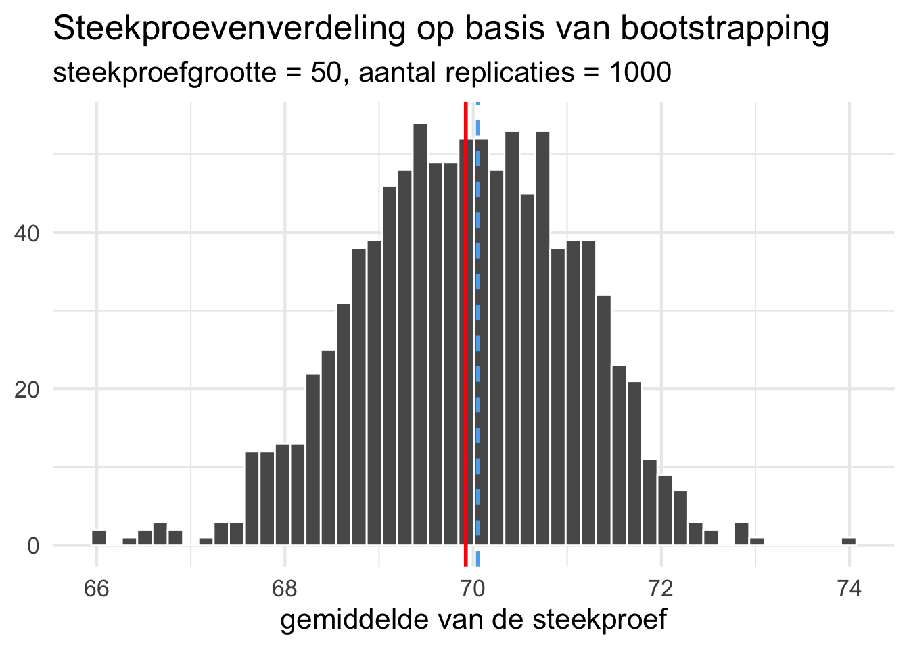
Wat valt je op aan de verdeling van de steekproevenverdeling in Figuur 1.12?
Het gemiddelde van de steekproevenverdeling ligt net iets verder af van het populatiegemiddelde dan we eerder zagen bij de herhaalde steekproeven uit de populatie. Dit komt waarschijnlijk omdat het gemiddelde van het oorspronkelijk sample waar bootstrapping op is toegepast ook net iets lager lag. De verdeling lijkt iets linksscheef, waarschijnlijk omdat het oorspronkelijke sample dit ook is. De standard error is vergelijkbaar met wat we eerder zagen.
Deel 2 | Echte data: variatie tussen steekproeven
In het eerste deel hebben we gewerkt met fictieve data. We hebben toen onze eigen populatie gemaakt met behulp van datasimulatie. In dit deel gaan we werken met echte data waarbij je de code uit het eerste deel kunt hergebruiken. We gaan werken met de data uit de Ethnologue, die we ook in Practicum 4 gebruikt hebben. Doorgaans hebben we geen toegang tot een hele populatie. In dit geval wel. De databestanden van de Ethnologue bevatten namelijk gegevens over het aantal talen in alle landen in de wereld.
- We gaan eerst de data uit Practicum 4 inlezen. Je hebt toen op basis van twee databestanden
LanguageCodes.tabenCountryCodes.tabeen gecombineerd databestandethnologue.txtgemaakt en opgeslagen. Lees dit databestand in. Mocht je dit databestand niet hebben dan kun je de code voor de eerste 3 stappen uit Practicum 4 opnieuw uitvoeren om het gecombineerde bestand opnieuw aan te maken. Het databestand geeft je per rij de informatie over één taal met daarbij het land waarin het wordt gesproken:
# A tibble: 6 × 6
lang_id lang_name lang_status country_id country_name area
<fct> <fct> <fct> <fct> <fct> <fct>
1 aaa Ghotuo L NG Nigeria Africa
2 aab Arum L NG Nigeria Africa
3 aac Ari L PG Papua New Guinea Pacific
4 aad Amal L PG Papua New Guinea Pacific
5 aae Albanian, Arbëreshë L IT Italy Europe
6 aaf Aranadan L IN India Asia - Maak op basis van het een databestand
ethnologue.txteen datatabel met daarin per land het aantal talen dat er wordt gesproken. Dit is onze populatie. Geef deze datatabel dan ook de naamethnologue_populatie. De datatabel zou er zo uit moeten zien:
# A tibble: 6 × 2
country_name aantal_talen
<fct> <int>
1 Afghanistan 30
2 Albania 3
3 Algeria 13
4 Angola 27
5 Antigua and Barbuda 1
6 Argentina 14- Bereken het gemiddelde en de standaarddeviatie van deze populatie en maak een grafiek van de verdeling. Wat valt je op?
Je gaat in de volgende opdrachten random steekproeven trekken. Voor de reproduceerbaarheid is het van belang dat je nu eenmalig een random seed instelt met de functie set.seed() waarbij je een willekeurig getal meegeeft als argument (zie de eerdere sectie Een dataset genereren in R). Maak nu dus eerst een apart codeblok aan in je Quarto-document waarin je deze functie uitvoert.
Het is van belang om je bestand steeds eerst te renderen naar html voordat je een interpretatie geeft van de data in een grafiek. Doe dit elke keer als je een grafiek klaar hebt. Baseer je interpretatie op de grafiek in het gerenderde html-document en niet op basis van de output in je qmd-bestand. Op deze manier weet je zeker dat je interpretatie overeenkomt met de grafiek die getoond wordt in je uiteindelijke document.
- Trek achtereenvolgens een steekproef van 10, 50 en 100 landen uit de populatie. Bereken van elke steekproef het gemiddelde en de standaarddeviatie. Hoe goed weerspiegelt elke steekproef de populatie?
- Maak nu een steekproevenverdeling voor een steekproef van 50 landen. Maak de steekproevenverdeling op basis van 10000 steekproeven. Maak een grafiek van de verdeling van de steekproevenverdeling. Geef het gemiddelde van de steekproevenverdeling en van de populatie weer met een verticale lijn. Wat valt je op?
Deel 3 | Betrouwbaarheidsintervallen in R
In de vorige opdrachten heb je gezien dat er behoorlijk wat variatie kan zitten in hoe goed het gemiddelde van een steekproef het gemiddelde van de populatie weergeeft. Ook heb je gezien dat uiteindelijk de steekproevenverdeling van het gemiddelde een normaalverdeling wordt (bij voldoende steekproefgrootte en herhaalde samples). Dit vormt de basis voor het vaststellen van het betrouwbaarheidsinterval dat ons informatie geeft over hoe betrouwbaar we het gemiddelde van de steekproef mogen zien als een schatter van het gemiddelde van de populatie. In het laatste deel van dit practicum ga je betrouwbaarheidsintervallen berekenen met R en vervolgens plotten in een grafiek. Hieronder volgt eerst een uitleg van twee manieren waarop betrouwbaarheidsintervallen kunnen worden verkregen in R. Vervolgens ga je die manieren toepassen op variabelen uit de Ethnologue-dataset die we in de vorige opdracht ook hebben gebruikt.
Handmatig berekenen
Om een betrouwbaarheidsinterval te kunnen plotten in een grafiek, hebben we de waarden van de ondergrens en bovengrens van het interval nodig. Zoals we in het hoorcollege hebben gezien kunnen we betrouwbaarheidsintervallen redelijk eenvoudig zelf berekenen. Hiervoor hebben we bepaalde informatie nodig van een variabele:
- het gemiddelde waarvoor een interval willen berekenen;
- de standaarddeviatie op basis waarvan we de standard error berekenen;
- het aantal observaties op basis waarvan we de standard error berekenen;
- de standard error, op basis van 2 en 3;
- het aantal vrijheidsgraden (n - 1), om de kritieke waarden te berekenen;
- de kritieke waarde uit de t-distributie, op basis van de breedte van het betrouwbaarheidsinterval en de vrijheidsgraden;
- de ondergrens van het interval (de onderste MOE);
- de bovengrens van het interval (de bovenste MOE).
Met onderstaande R-code kunnen we deze informatie verkrijgen voor een 95%-betrouwbaarheidsinterval. Dit is toegepast op de variabele Petal.Length uit de dataset iris die standaard in R wordt geladen. Deze variabele geeft de lengte weer van de bloemblaadjes van bepaalde soorten planten uit het plantengeslacht Iris.
ci.sum <- iris %>%
summarize(mean = mean(Petal.Length),
sd = sd(Petal.Length),
n = length(Petal.Length),
se = sd / sqrt(n),
df = n - 1,
t = qt(.975, df = df), #kwantiel voor middelste 95% is 97.5 (of 2.5)
ci.min = mean - t * se,
ci.max = mean + t * se
) %>%
round(2) #afronden op twee decimalenDe output van deze code ziet er zo uit:
mean sd n se df t ci.min ci.max
1 3.76 1.77 150 0.14 149 1.98 3.47 4.04Op basis van deze informatie zien we dat het gemiddelde 3.76 is en de ondergrens van het betrouwbaarheidsinterval 3.47 en de bovengrens 4.04.
We kunnen deze informatie vervolgens omzetten in een grafiek (Figuur 3.1). In Figuur 3.1 plotten we alleen het gemiddelde met het bijbehorende interval. We gebruiken hiervoor geom_pointrange(), dat 3 waardes nodig heeft: het gemiddelde, de ondergrens van het interval en de bovengrens. Andere opties om betrouwbaarheidsintervallen weert te geven zijn bijv. geom_errorbar() of geom_errobarh(). Deze geoms kun je combineren met andere geoms om een vollediger beeld te geven van de data, zie hiervoor Figuur 3.2. Dit ga je zo oefenen in de opdrachten.
ci.sum %>%
ggplot(aes(x = factor(0), y = mean)) +
geom_pointrange(aes(ymin = ci.min, ymax = ci.max)) +
labs(y = "Mean Petal Length",
x = NULL,
caption = "error bars indicate 95% CI"
) +
ylim(3, 5) +
theme_minimal(14) +
theme(axis.text.x = element_blank())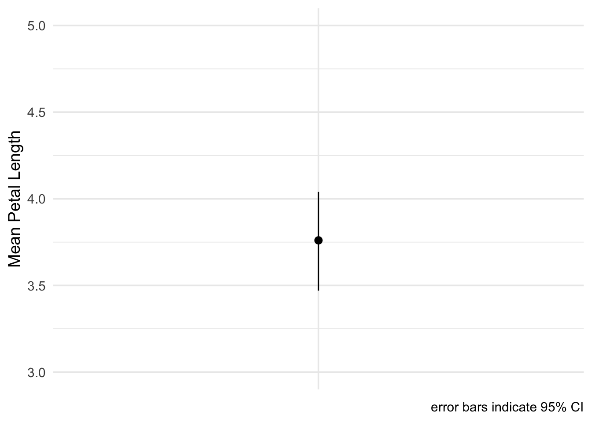
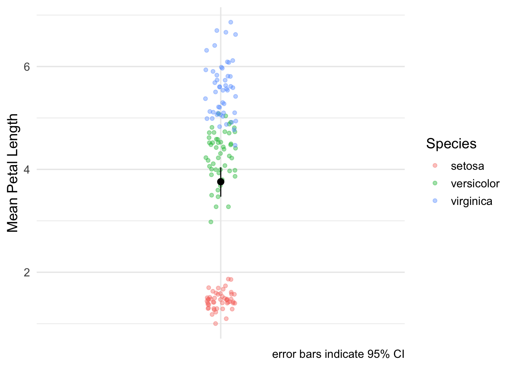
Met deze handmatige manier heb je volledige controle over wat er wordt berekend en hoe je het vervolgens omzet in een grafiek. Je kunt deze code ook combineren met andere tidyverse commando’s om bijvoorbeeld het betrouwbaarheidsinterval te berekenen voor twee aparte groepen. Dit ga je in de opdrachten toepassen.
Bestaande functies
Naast de handmatige manier zijn er ook bestaande functies in tidyverse die je kunt gebruiken om betrouwbaarheidsintervallen te berekenen. We bespreken er hier twee: mean_cl_normal() en mean_cl_boot(). De eerste functie berekent de intervallen op basis van de t-distributie, vergelijkbaar met onze handmatige versie hierboven:
ci.normal <- iris %>%
summarize(mean_cl_normal(Petal.Length)
)
round(ci.normal, 2) y ymin ymax
1 3.76 3.47 4.04Zoals je ziet komen hier precies dezelfde waarden uit als we net handmatig hebben berekend.
Je kunt ook de breedte van het interval aanpassen met het argument conf.int. De standaardwaarde van dit argument is .95. Hieronder passen we het aan naar .99 om een 99%-betrouwbaarheidsinterval te berekenen.
ci.normal <- iris %>%
summarize(mean_cl_normal(Petal.Length, conf.int = .99)
)
round(ci.normal, 2) y ymin ymax
1 3.76 3.38 4.13De functie mean_cl_boot berekent het 95%-betrouwbaarheidsinterval op basis van bootstrapping. Ook hier kun je de breedte van het interval aanpassen met het argument conf.int. Ook kun je het aantal bootstrap runs aanpassen met het argument boot (standaard ingesteld op 1000).
ci.boot <- iris %>%
summarize(mean_cl_boot(Petal.Length)
)
round(ci.normal, 2) y ymin ymax
1 3.76 3.38 4.13Je ziet dat dit 95%-interval wijder is dan dat berekend met de t-distributie (het is even wijd als het 99%-interval hierboven). Dit heeft te maken met de structuur van de data, zoals je kunt zien in Figuur 3.2. Als er bijvoorbeeld veel datapunten uit de rode groep worden geselecteerd dan zal de ondergrens lager uitvallen.
We kunnen deze twee functies ook direct aanroepen wanneer we een grafiek maken met ggplot2. Dit doe je door het toevoegen van de functie stat_summary() (zie coderegel 3). Hierin specificeer je met het argument fun.data op welke manier je de intervallen berekend wilt hebben (in het voorbeeld is bootstrapping gebruikt) en met fun.args welk betrouwbaarheidsniveau je wilt hanteren (hier: 95%). We kunnen dan meteen het oorspronkelijke databestand invoeren en hoeven niet apart de waardes van het interval te berekenen.
iris %>%
ggplot(aes(x = factor(0), y = Petal.Length)) +
stat_summary(fun.data = "mean_cl_boot", fun.args = list(conf.int = .95)) +
labs(y = "Mean Petal Length",
x = NULL,
caption = "error bars indicate 95% CI") +
coord_cartesian(ylim = c(3, 5)) +
theme_minimal(14) +
theme(axis.text.x = element_blank())Zelf aan de slag
Je gaat nu zelf betrouwbaarheidsintervallen berekenen voor het gemiddelde aantal talen in een steekproef uit de data van de Ethnologue.
- Trek een steekproef van 40 landen uit de datatabel
ethnologue_populatievan de vorige opdracht.
- Bereken het gemiddelde aantal talen per land in de steekproef. Bereken ook het 95%-betrouwbaarheidsinterval rondom dit gemiddelde. Doe dit zowel op de handmatige manier als met behulp van de ingebouwde functies. Vergelijk je resultaten. Welk interval lijkt je in dit geval het beste om te nemen?
- Maak nu een grafiek van data. Plot hierbij naast het gemiddelde en het betrouwbaarheidsinterval ook de oorspronkelijke datapunten (aantal talen per land). Geef bij je figuur duidelijk aan wat het betrouwbaarheidsinterval uitbeeldt.
- Herhaal vraag 2 maar nu voor een 99%-betrouwbaarheidsinterval. Verklaar het verschil in waardes met die gevonden bij vraag 2.
Dit is het einde van practicum 6.